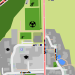

Sporthalle
Bisschen Sport schadet dir nicht!
Position auf der Karte

Das könnte dich auch interessieren
Vereinsheim SV Herzogsägmühle
Tennisplatz
Fußballplatz
Handballfeld
Sprintstrecke
Beach-Volleyballfeld
Mehr interessante Orte entdecken
↠Startseite
↠Karte